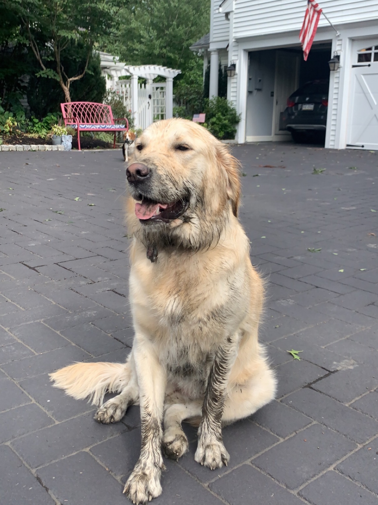

Hi, my name is Paige Newman. I am a senior here at Pitt majoring in Biology and Psychology. My plan for after college is to take a gap year before hopefully being accepted into medical school. I have 3 dogs at home and some of my hobbies include running, hiking, and baking. I took Composing Digital Media to maybe learn a little bit more about how different types of media are made. I also wanted the chance to be creative.